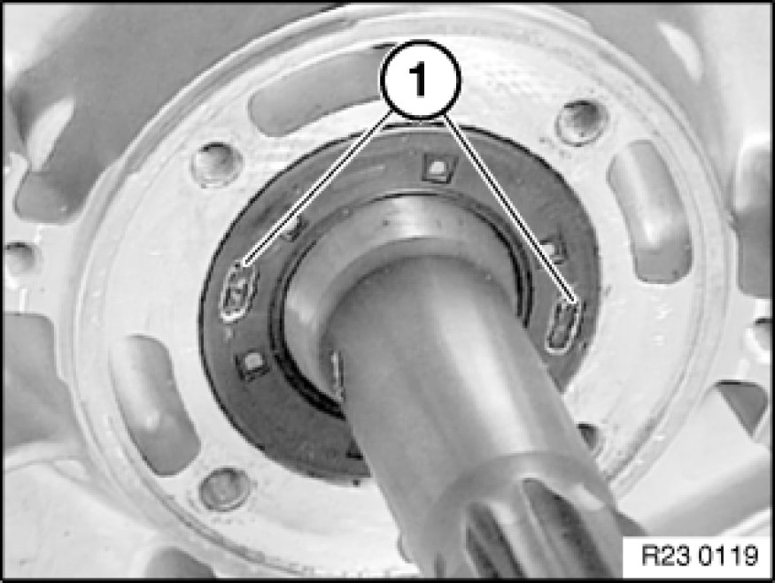
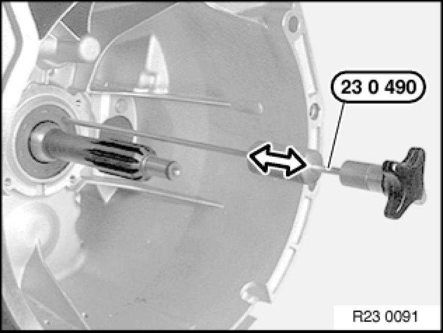
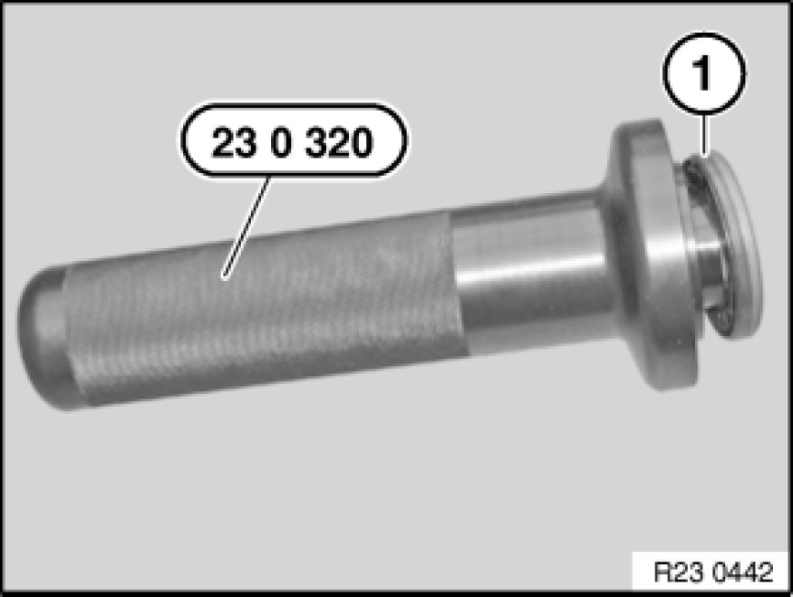
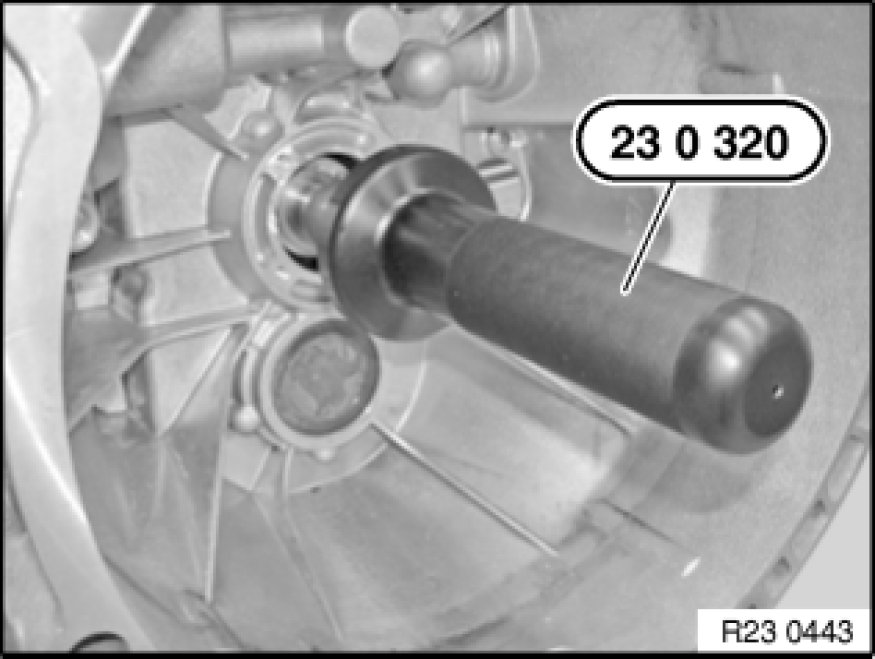

23 12 513 Replacing Radial Seal For Drive Shaft (GS6-17BG/DG)
23 12 513 - Replacing radial seal for drive shaft (GS6-17BG/DG)

Special tools required:

Important!
After completion of work, change final drive fluid Service and Repair.
Use only approved transmission oil.
Failure to comply with this instruction will result in serious damage to the transmission.

Necessary preliminary tasks:
- Remove guide tube 23 11 608 Replacing Guide Tube for Clutch Release Unit (GS6-17BG/DG)

Note:
Two covered removal holes (1) are located on end face of radial seal.

Screw special tool 23 0 490 into one of two removal holes.
Withdraw radial seal from transmission housing with aid of impact weight.

Push radial seal (1) onto special tool 23 0 320.

Installation Note:
Coat sealing lips of radial seal with gear oil.
Slide special tool 23 0 320 onto input shaft.
Drive in radial seal with plastic hammer as far as it will go.